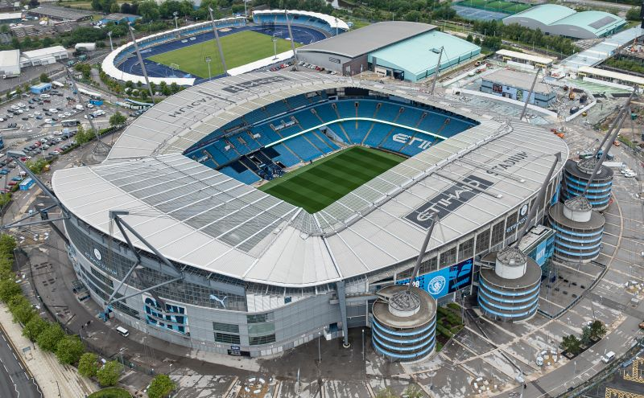
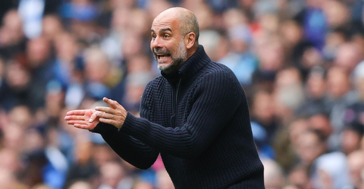
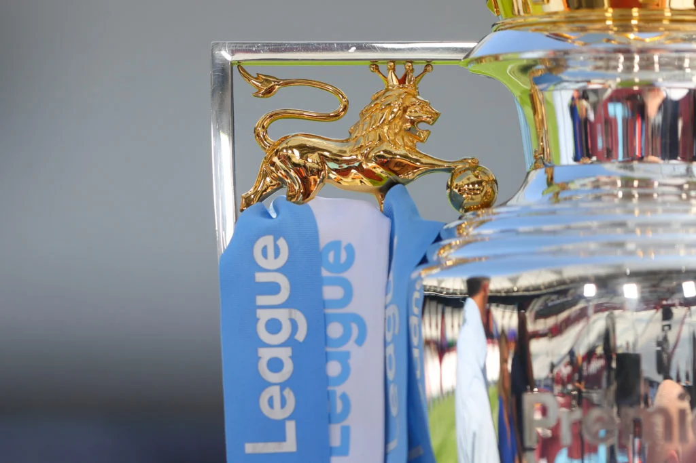
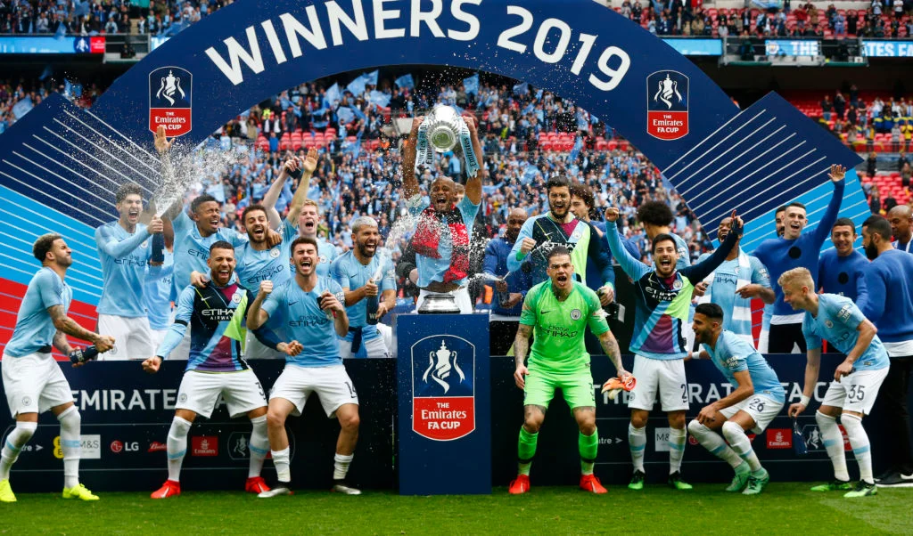
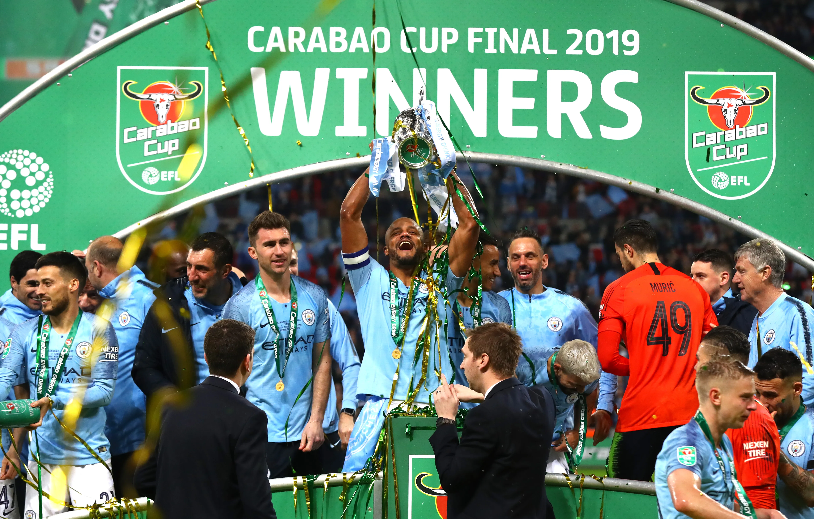
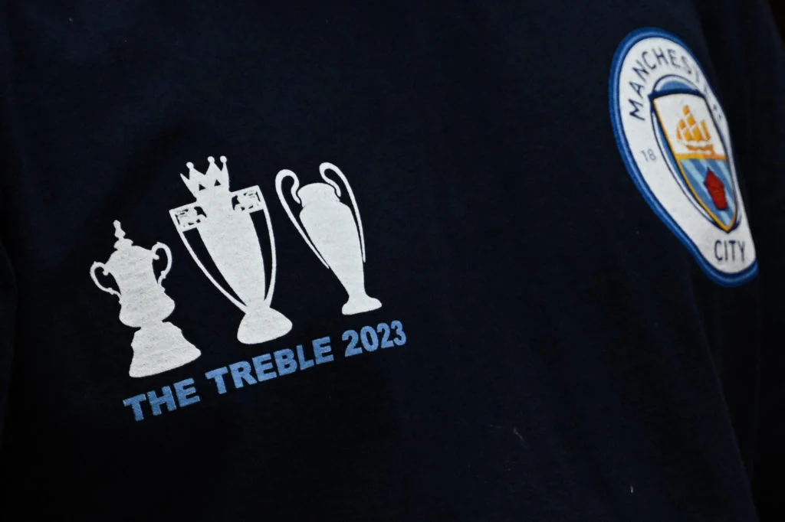
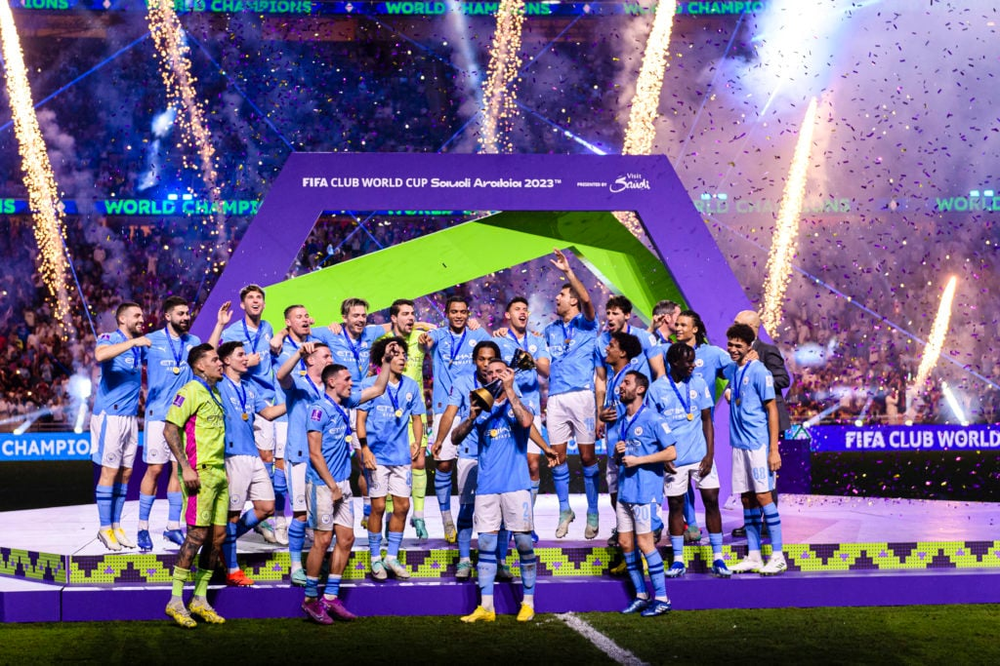

Sejarah

Sejarah berdirinya Manchester City Football Club tidak
terlepas dari peran seorang wanita. Pada November 1865, Arthur
Connell diangkat sebagai Kepala Gereja St.Mark's di West Gorton,
sebuah distrik di timur Manchester, Inggris. Putrinya Anna Connell
(1855-1924) berinisiatif dan memutuskan untuk membentuk sebuah
asosiasi yang mendorong para pemuda paroki untuk berolahraga. Saat
itu tingkat kejahatan dan pengangguran sangat tinggi. Mereka percaya
bahwa olahraga dapat menyatukan dan mengurangi kejahatan di timur
Manchester. Tahun 1868 sudah terbentuk Tim Kriket Gereja St. Mark's
dan mulai tahun 1875 tim kriket mulai menambahkan permainan sepak
bola yang pada waktu itu mulai populer. Akhirnya pada tahun 1880
para pemain kriket membentuk tim sepak bola dengan nama St. Marks
(West Gordon) di bawah bimbingan William Beastow dan Anna Connell
(diyakini sebagai satu-satunya wanita telah mendirikan sebuah klub
sepak bola profesional di Inggris). Tahun 1887 mereka pindah ke
markas yang baru di Hyde Road, Ardwick. Nama klub pun berubah
menjadi Ardwick A.F.C. untuk menyesuaikan dengan letaknya yang baru.
Ardwick mulai ikut berkompetisi di divisi 2 Football League tahun
1892. Setahun kemudian, musim 1893-94, masalah keuangan membelit
klub dan setelah diorganisasi ulang akhirnya mereka berganti nama
lagi menjadi Manchester City Football Club.
Club
Manager

Reputasi Pep Guardiola sebagai salah satu pelatih terbaik di
dunia tidak perlu diragukan lagi. Salah satu buktinya adalah 17
trofi yang diraih dari delapan musim bersama Manchester City.
Guardiola baru saja membawa Man City meraih gelar juara Premier
League musim 2023/2024. Pada klasemen akhir, Phil Foden dan kolega
mampu meraih 91 poin. Mereka unggul dua poin dari Arsenal. Gelar
tersebut menegaskan dominasi Man City di Premier League, terutama
pada era Pep Guardiola. Sebab, dari delapan musim bersaing di
Premier League, Guardiola mampu meraih enam gelar. Guardiola hanya
gagal dua kali, pada musim pertamanya dan ketika Liverpool tampil
luar biasa musim 2019-2020 lalu. Namun, Man City tetap tampil
kompetitif.
Players

Kiper
- Ederson
- Stefan Ortega
- Scott Carson
Bek
- Kyle Walker
- Ruben Dias
- John Stones
- Nathan Ake
- Aymeric Laporte
- Sergio Gomez
- Manuel Akanji
- Rico Lewis
Gelandang
- Kalvin Phillips
- Mateo Kovacic
- Jack Grealish
- Rodri
- Kevin De Bruyne
- Bernardo Silva
- Maximo Perrone
- Phil Foden
- Cole Palmer
Penyerang
- Erling Haaland
- Julian Alvarez
- Riyad Mahrez
Trophy
Manchester City memiliki sejarah trofi yang kaya dengan
penduduk asli Stadion Etihad yang sekarang menjadi pusat permainan
Inggris. Pengambilalihan Sheikh Mansour bin Zayed Al Nahyan pada
tahun 2008 telah memberikan rentetan kesuksesan yang seolah tak ada
habisnya untuk terus memperkuat daftar berapa banyak gelar yang
telah diraih The Citizens. Gelar Premier League 2011/12 yang mereka
raih merupakan trofi divisi teratas pertama Manchester City sejak
mahkota Divisi Pertama 1967/68. Sementara beberapa tahun terakhir
juga membawa kesuksesan besar di kompetisi piala domestik.
Manchester City pun meraih trofi Liga Champions pertamanya pada
musim 2022/23.
The Citizens telah memenangkan kompetisi papan atas Inggris
sebanyak 9 kali

Divisi Pertama yang lama menandai trofi papan atas Inggris
pertama yang ditambahkan Manchester City ke dalam daftar gelar
mereka pada tahun 1936/37. The Citizens hanya akan memenangkan
kompetisi papan atas sekali lagi sebelum musim perdana Liga
Premier yang memisahkan diri pada tahun 1992/93. Namun
pengambilalihan Sheikh Mansour mengubah mereka menjadi kekuatan
besar.
Daftar gelar juara liga Manchester City:
- Liga Sepak Bola Inggris 1936/37, Divisi Pertama
- 1967/68
- Liga Premier 2011/12
- 2013/14
- 2017/18
- 2018/19
- 2020/21
- 2021/22
- 2022/23
- 2023/24
Selain trofi-trofi papan atas dalam daftar jumlah gelar yang telah
dimenangkan Manchester City, klub juga telah mengangkat tujuh
trofi liga tingkat bawah. The Citizens sering menduduki puncak
divisi kedua setiap kali klub berada di luar divisi teratas.
Mereka terakhir kali bermain di divisi kedua pada tahun 2001/02.
Daftar gelar liga Manchester City lainnya:
- Liga Sepak Bola Inggris 1898–99, Divisi Kedua
- 1902/03
- 1909/10
- 1927/28
- 1946/47
- 1946/47
- Liga Sepak Bola Inggris 2001/02, Divisi Pertama
Manchester City telah memenangkan Piala FA 7 kali

Trofi pertama dalam daftar berapa banyak gelar yang telah
dimenangkan klub dalam sejarah Manchester City datang pada tahun
1903/04 dengan Piala FA . Itu adalah kampanye sepak bola liga
terorganisir ke-13 klub dan upaya ke-11 mereka untuk memenangkan
Piala FA. The Citizens hanya dua kali lolos dari babak pertama
sebelumnya. Gelar Piala FA ditampilkan sepanjang sejarah trofi
Manchester City setelah menikmati kesuksesan dalam beberapa
dekade. Namun The Citizens belum pernah mempertahankan gelar
karena juga mengalami kekeringan panjang.
Daftar gelar Piala FA Manchester City:
- 1903/04 (mengalahkan Bolton Wanderers 1-0 di final)
- 1933/34 (mengalahkan Portsmouth 2-1 di final)
- 1955/56 (mengalahkan Birmingham City 3-1 di final)
- 1968/69 (mengalahkan Leicester City 1-0 di final)
- 2010/11 (mengalahkan Stoke City 1-0 di final)
- 2018/19 (mengalahkan Watford 6-0 di final)
- 2022/23 (mengalahkan Manchester United 2-1 di final)
The Citizens telah memenangkan Piala EFL sebanyak 8 kali

Manchester City memasuki Piala Liga Sepakbola Inggris (EFL
Cup) untuk pertama kalinya pada musim 1960/61. Sejak itu mereka
menjadi salah satu tim tersukses dalam sejarah kompetisi. The
Citizens memenangkan empat gelar berturut-turut dari 2018 hingga
2021 di tengah rentetan enam trofi dalam delapan musim.
Daftar gelar Piala EFL Manchester City:
- 1969/70 (mengalahkan West Bromwich Albion 2-1 di final)
- 1975/76 (mengalahkan Newcastle United 2-1 di final)
- 2013/14 (mengalahkan Sunderland 3-1 di final)
-
2015/16 (mengalahkan Liverpool 3-1 melalui adu penalti di final)
- 2017/18 (mengalahkan Arsenal 3-0 di final)
-
2018/19 (mengalahkan Chelsea 4-3 melalui adu penalti di final)
- 2019/20 (mengalahkan Aston Villa 2-1 di final)
- 2020/21 (mengalahkan Tottenham Hotspur 1-0 di final)
Manchester City telah memenangkan 3 gelar Eropa

Manchester City memiliki tiga gelar Eropa dalam sejarah
trofi mereka dengan Piala Winners, Liga Champions, dan Piala Super
UEFA. The Citizens mengalahkan tim Polandia Gornik Zabrze di final
untuk meraih gelar UEFA pertama mereka. Perjalanan mereka ke final
juga menampilkan kemenangan atas Athletic Bilbao dan Schalke.
Manchester City membutuhkan waktu 53 tahun lagi sebelum tim Etihad
Stadium menambahkan gelar Eropa lainnya ke dalam daftar berapa
banyak trofi yang telah mereka menangkan. The Citizens kembali ke
final Liga Champions dan mengalahkan Inter Milan 1-0 melalui Rodri
pada 2022/23 setelah kalah 1-0 melawan Chelsea pada 2020/21. Namun
tidak butuh waktu 53 tahun lagi untuk mendapatkan penghargaan
kontinental ketiga mereka. Manchester City memperebutkan Piala
Super UEFA melawan Sevilla pada Agustus 2023 sebagai juara
bertahan Liga Champions dan Liga Europa. City menang 5-4 melalui
adu penalti setelah Cole Palmer menyamakan kedudukan melalui
sundulan pada menit ke-63.
Daftar Gelar Juara Eropa Manchester City:
-
Piala Winners UEFA 1969/70 (mengalahkan Gornik Zabrze 2-1 di
final)
-
Liga Champions UEFA 2022/23 (mengalahkan Inter Milan 1-0 di
final)
-
Piala Super UEFA 2023 (mengalahkan Sevilla 5-4 melalui adu
penalti setelah bermain imbang 1-1)
Manchester City telah memenangkan 1 Piala Dunia Antarklub FIFA

Manchester City memenangkan yang terakhir dari lima trofi
besar mereka pada tahun 2023 ketika mereka dinobatkan sebagai
juara Piala Dunia Antarklub FIFA pada bulan Desember. City lolos
ke semifinal turnamen tersebut setelah menjuarai Final Liga
Champions 2022/23 dan mengalahkan Urawa Red Diamonds 3-0 untuk
melaju ke final. The Citizens kemudian mengalahkan Fluminense 4-0
di final berkat dua gol Julian Alvarez dan gol selanjutnya dari
Phil Foden dan Nino yang mencetak gol bunuh diri.